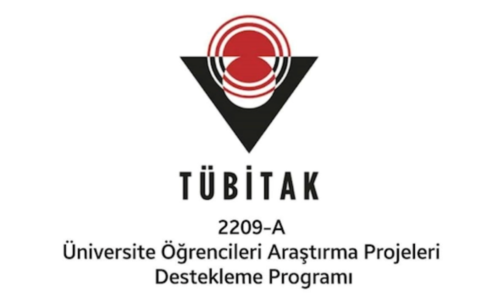
Görsel Habercilikte Yapay Zekânın Rolü
Yapay zekâ tabanlı görsel üretim araçlarının habercilikteki etik ve pratik rolünü inceleyen akademik araştırma çalışması.
Detayları Gör
Görsel İletişim Tasarımcısı
"Yaratıcı, etkileyici, özgün tasarımlar."
Tasarım, teknoloji ve araştırmanın kesişiminde ürettiğim projeleri burada bir araya getiriyorum. Her çalışma, hem yaratıcı yaklaşımımı hem de problem çözme süreçlerimi yansıtan özgün bir deneyim sunuyor.

Yapay zekâ tabanlı görsel üretim araçlarının habercilikteki etik ve pratik rolünü inceleyen akademik araştırma çalışması.
Detayları Gör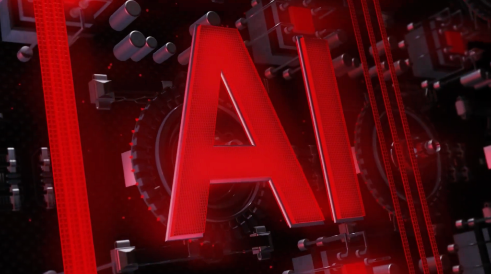
Yapay zekânın teknolojik gelişim süreçlerini ve toplumsal etkilerini ele alan konsept, kurgu ve video belgesel yapımı.
Detayları Gör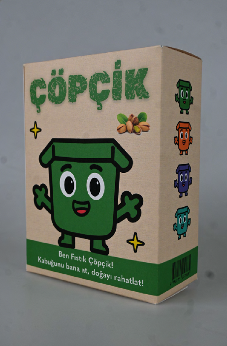
Özgün karakter tasarımları ve sürdürülebilir çevre bilinci odaklı ambalaj tasarımı ile kurgulanmış marka kimliği.
Detayları Gör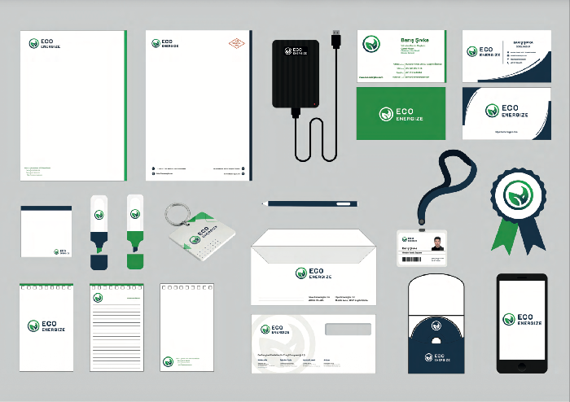
Doğa dostu ve sürdürülebilir bir yeşil enerji girişimi için hazırlanan kurumsal kimlik, logo ve marka kılavuzu.
Detayları Gör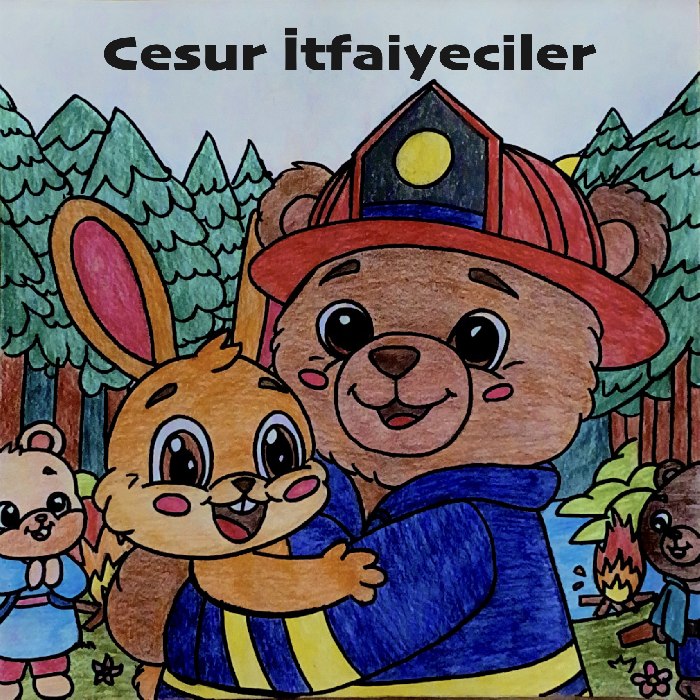
Çocuklara yönelik eğitici hikaye kurgusuyla tasarlanan, özgün illüstrasyonlar içeren basılı çocuk kitabı projesi.
Detayları Gör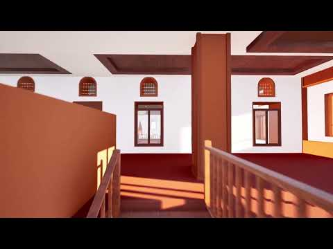
Tarihi ve kültürel mirasın tanıtımı amacıyla hazırlanan 3D modelleme, render ve kartpostal tanıtım materyalleri.
Detayları Gör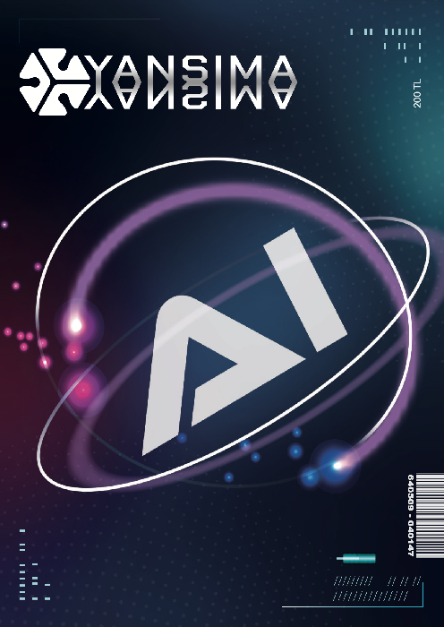
Yapay zekânın yaratıcı endüstrilerdeki yerini inceleyen, modern tipografiye sahip basılı dergi yayın tasarımı.
Detayları Gör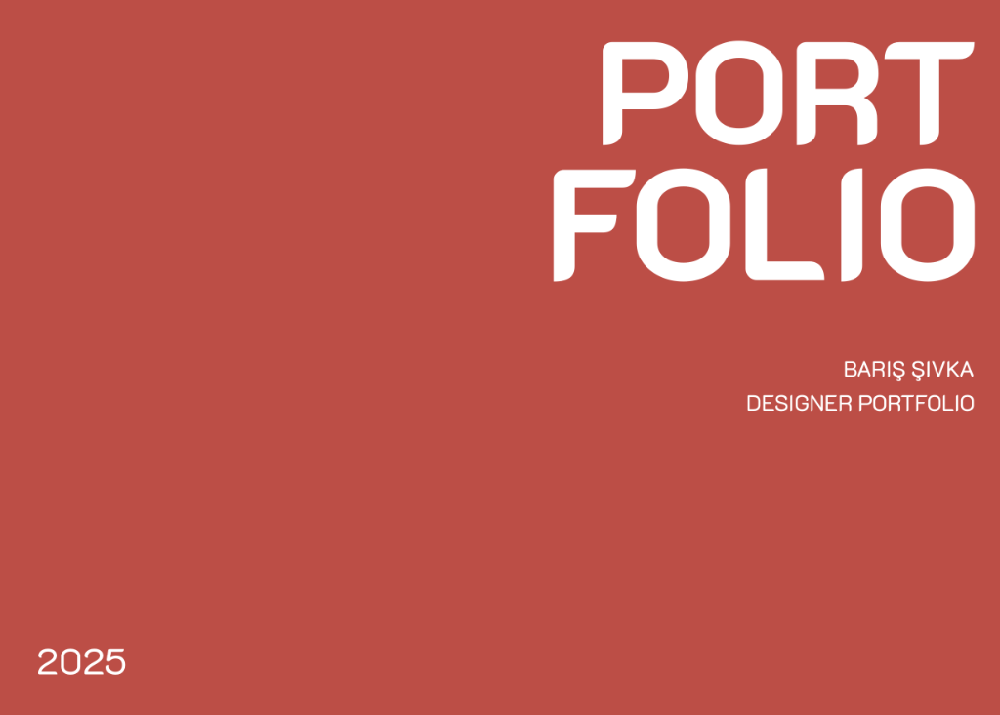
Harflerin görsel dilini deneysel bir yaklaşımla ele alan kartvizit, poster ve font tasarım çalışmalarından oluşan seri.
Detayları Gör
İki ülkenin yüzüncü yılı onuruna Türk Japon Vakfı'nda düzenlenen serginin kurumsal tanıtım materyalleri tasarımı.
Detayları Gör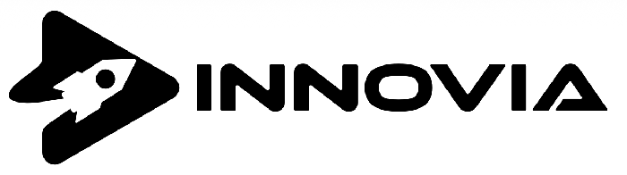
Gelecek teknolojileri odaklı inovasyon festivali için hazırlanan basılı kitapçık, afiş ve video tanıtım süreçleri.
Detayları Gör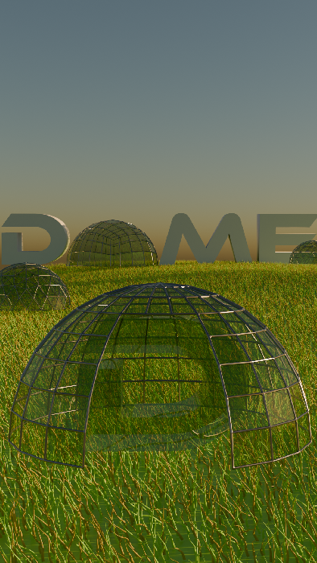
Blender ortamında tasarlanan üç boyutlu nesne modelleme, sahne ışıklandırması ve gerçekçi render alma çalışmaları.
Detayları Gör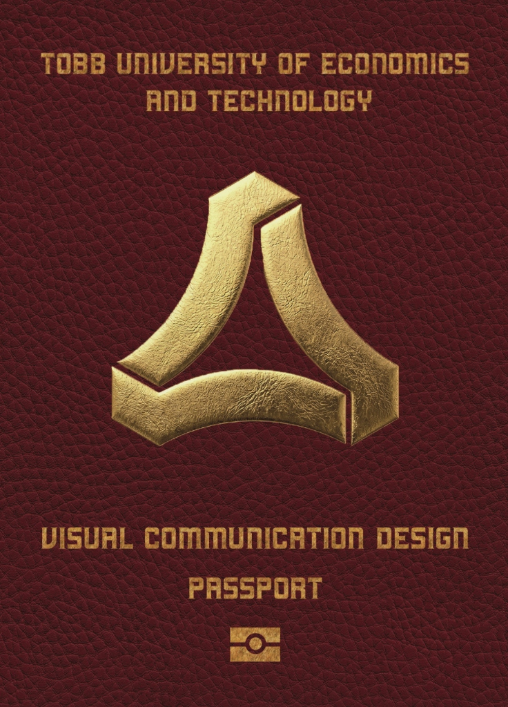
Seyahat ve sınırları aşma teması üzerine kurgulanmış, reklam sloganları ile desteklenen konsept afiş tasarımı.
Detayları Gör